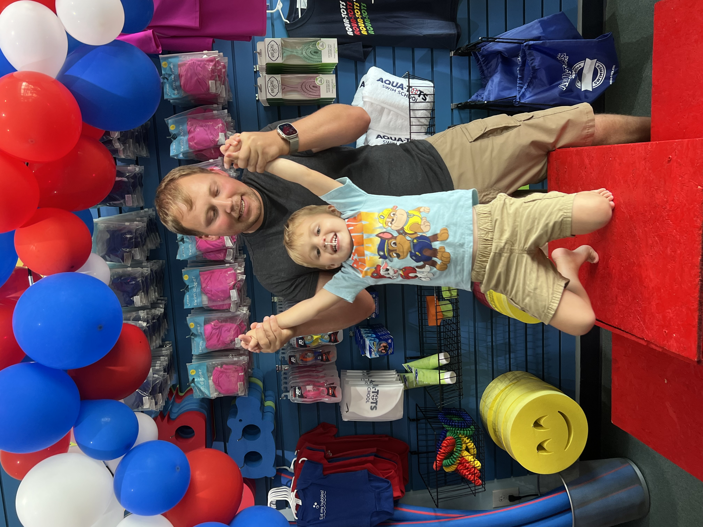
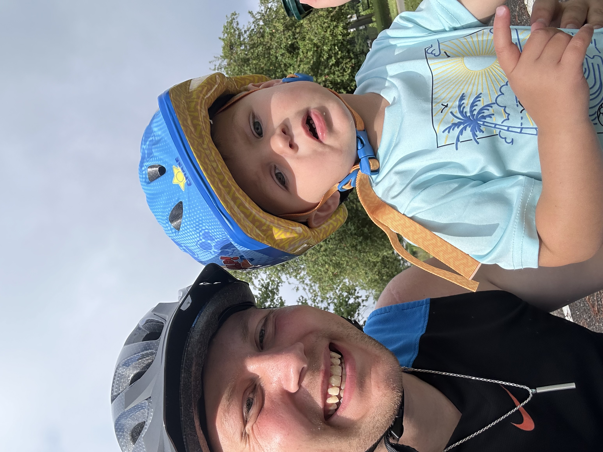

My Role as a Parent
Being a father is one of the most important parts of my life and has shaped the way I view responsibility, priorities, and personal growth. Fatherhood has taught me that being present is about more than simply providing for a child; it also means offering guidance, support, patience, and consistency every day. As a parent, I try to lead by example and show the importance of discipline, care, and commitment through my actions. This role has changed the way I approach both my personal life and my long-term goals.
My understanding of fatherhood has also expanded beyond just being a parent to my own son. I have taken on a father figure role for other children in my life, which has helped me better understand the importance of building trust, stability, and a positive home environment. That experience has shown me that family is built not only through biology, but also through love, presence, and responsibility. Overall, being a father has become one of the strongest influences on the person I am today.


Balancing Family and Goals
Balancing family life with work, school, and other responsibilities requires constant effort and careful time management. Fatherhood has made me more aware of how I spend my time and what truly deserves my attention. It has also motivated me to continue building a future that is stable, meaningful, and centered on the people who depend on me. Even when life becomes busy, family remains one of the main reasons I continue pushing forward.
As my life continues to grow, I am also preparing for a blended family environment, which adds another important layer to my goals and responsibilities. Building a healthy relationship and creating a supportive home for multiple children takes communication, patience, and teamwork. That balance is not always easy, but it is meaningful and worth the effort. In many ways, family life is what gives purpose to the goals I pursue in every other area of my life.